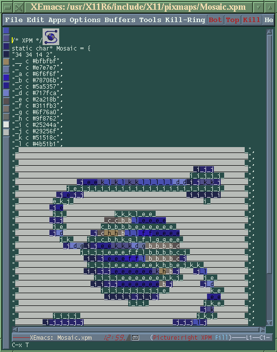

![[ TABLE OF CONTENTS ]](../gx/indexnew.gif)
![[ FRONT PAGE ]](../gx/homenew.gif)


The developers of XEmacs, the independently-maintained offshoot of GNU Emacs, have released a new version of this versatile editor. Version 19.15 is the last of the 19.xx series; in the future developmental efforts will be focussed on the 20.xx series, which up to the present has been evolving in parallel with version 19.
Aside from many bug-fixes, a good deal of the changes in this version involve updates to many of the large extension packages which come bundled with the editor. Quite a large bundle it is, weighing in at over eighteen megabytes, tarred and gzipped.
Among the new features are:
The members of the XEmacs team have changed with this release; former maintainer Chuck Thompson has passed the torch to Steve Baur. The other maintainers are now Martin Buchholz and Kyle Jones (author of the VM mail package), with Bob Weiner, Chuck Thompson, Ben Wing and Bill Perry helping out as well.
It's interesting to note how the developers of the various extension packages and of XEmacs itself have attempted to maintain a certain parallelism with Gnu Emacs development. Most extensions, even those written primarily with XEmacs in mind, have support for Gnu Emacs built in. The XEmacs team attempts to incorporate new features and bug fixes from Gnu Emacs development into their version; I wonder if the opposite is true?
Binary packages for 19.15 are available at the XEmacs FTP site, but there are several reasons why compiling your own can be advantageous. XEmacs uses a configure script to adapt the makefiles to your machine. There are many possible switches or parameters which can be given to the script depending on your needs. The editor supports inlined JPEG, GIF, XPM, and PNG images; support for any of these can be disabled. If you don't plan on running the W3 browser or using the MIME capabilities of VM or Gnus (combined with TM) this might be a good idea. Sound support is another frill which not everyone will want. These optional features aren't a burden if you have a memory-laden and powerful machine, but they aren't really necessary and can be dispensed with if the resources to use them are insufficient. The toolbar (and even X-Windows support) can be disabled by the configure script if you want a leaner, less memory-hungry executable.
You will need about 80 mb. of disk space to compile from source; luckily most of that can be reclaimed afterwards.
There's no denying that an XEmacs installation occupies quite a chunk of disk space. A new shell-script called gzip-el.sh is supplied with version 19.15 which uses the Gnu find utility to recursively probe the various LISP subdirectories, gzipping all *.el files which have a corresponding byte-compiled *.elc file. This alone will save about fourteen megabytes!
If you have no intention of ever modifying or reading those *.el Lisp files you could just delete them all, but that might be rash. Sometimes the only documentation for a mode or function is buried in one of those files; others can be modified to suit your preferences. A better alternative is to become root and, wielding rm, dispose of some of the Lisp packages which you don't think you'll ever need. Try to avoid the /lisp/prim directory, though, as the essential core files live there. I don't know how many times I've removed the Energize, VMS, and MH-E directories from past installations; I'm sure I'll be removing them again in the future. A promised feature of version 20.1 (which will be the next major release) is the separation of some of these packages from the main distribution. This will allow the core of XEmacs to be obtained separately, allowing the user to decide which of the extensions to download, depending upon his or her needs.
Anyone who has used XEmacs for very long, especially for writing code, likely has had the desire to come up with a set of syntax-highlighting colors which are both pleasing to the eye and functional. In XEmacs, a "face" is a combination of font and color specifications for a certain category of text. There are many of these defined; each mode tends to have several of its own as well as sharing system-wide faces. It can be quite a time-consuming job setting these in your ~/.emacs file, especially if you use a dark background, in which case many of the default colors won't have sufficient contrast. XEmacs 19.14 allowed face modifications by means of the edit-faces command. This utility works well, appending the changes to your ~/.emacs file. Unfortunately the format they are saved in is particularly difficult to read if you ever wanted to make a single change manually; the lines are very long and the syntax is obtuse and thickety.
Per Abrahamsen, maintainer of Auctex (another of the bundled packages), has written the Custom package in an effort to simplify the customization of XEmacs and its many extensions. After typing esc-x customize a buffer appears with menu entries for not only faces but other user-definable variables. These entries are categorized by package; selecting one causes a cascading sub-menu to appear. The first category is just "Emacs", which allows global settings to be made. In order for a package to be included in the Customize buffer the programmer must include hooks in the LISP code. Most of the larger packages, such as Gnus, the VM mail-reader, W3, and EFS (the new successor to AngeFTP) have been adapted in this way.
It is wise to back up any .emacs or .xemacs-options files which you are fond of before fooling around with any such auto-customizing utilities. That tempting "Options" menu with all its choices will cheerfully overwrite your .xemacs-options file if you impulsively select the "Save Options" item. Remember, you can always cut-and-paste from the generated file into your real one, then move it back. The Custom package is more forgiving: it appends its results to the end of your .emacs file. I've noticed that often when an XEmacs package such as Custom or W3 appends to your init file it will drop down several lines from the bottom entry before writing its lines. If you are looking at the file, curious as to what changes have been made, scroll down past the end; it's easy to miss an addition if it's lurking down amongst the superfluous empty lines which XEmacs has a penchant for adding to the end of a file.
One technique which is useful for customizing XEmacs, Fvwm2, or any complex piece of Linux software is to assume a different identity. Just create a new user (with adduser or equivalent) and log in to the new account. This way you have a clean slate and can modify, cut and paste with abandon, all the while knowing you can return to your normal login account if things go awry. The sample .emacs file which is found in the /etc subdirectory of the XEmacs distribution can serve as a good starting point, especially if you are new to Emacs-type editors in general.
To accommodate users who run XEmacs on a grayscale or limited-color
display, the XEmacs team has included toolbar icons which are rather plain. I
suspect that most XEmacs users eventually turn off the toolbar (the keyboard
commands are faster) but if you'd like replacement icons which are
well-designed, color-map-eating and very stylish, the AfterStep FTP site has a
set of them, in the file NeXT.XEmacs.tar.gz. (A pox on mixed-case
filenames!) These can be dropped right in to the [XEmacs-root]/etc/toolbar
directory, overwriting the old ones. Here's a cropped screenshot:
The XEmacs documentation is voluminous, but there are so many obscure modes
and features included that to document them all would add megabytes to the
distribution (plus someone would have to volunteer to do it!). You would be
surprised at what can be found while browsing through the directories of Lisp
files. As an example, the other day I happened upon a file called
xpm-mode.el in the /lisp/modes directory. Curious, I loaded the file
into XEmacs and saw that it is a colorized mode for directly editing xpm
icon-files. This is quite an interesting mode, but I'd never heard of it; it
was contributed to the XEmacs maintainers by Joe Rumsey and Rich Williams in
1995. Here's a sample window:

There are all sorts of obscure modes and packages buried in the lisp subdirectories; grepping for various keywords will turn up some interesting files.
I've been following the late stages of this XEmacs beta cycle and I'm impressed by the amount of work involved in putting together such a large, complex package. The developers and beta-testers deserve kudos for their efforts.
If you would like to try it out, the source is currently available at the home XEmacs site. This site will probably be crowded during the first week or two after the release; if you are unable to log on a list of mirror sites will be displayed. If you would rather not download the massive archive file, just wait a few weeks and I'm sure the distribution will show up on various distribution and FTP-archive CDROMs.